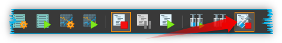

Nemesys Script Functions
Introduction to Nemesys Script Functions
The Nemesys plugin offers a number of script functions which can be used to program automatic sequences. The following script functions are available:

Automatically stop pumps at script stop
If you want all pumps to be stopped immediately when the user stops the running script program, activate the corresponding button in the main toolbar.
Dose Volume

With this function, you can dose a specific volume at a precisely defined flow rate. In the selection field Dosing Module ❶ you select the dosing module you want to use for dosing. Alternatively, you can also enter the name of a script variable in the field, which contains a device reference of a pump.

All other parameters, such as the volume to be dosed and the flow rate, can be set in the Target Values ❷ area.
You can also activate or deactivate the Run to completion ❸ parameter in the configuration area. When Run to completion is activated, the script execution is not continued until the complete volume has been dosed and the dosing process has ended. If this parameter is not active, the dosing is started, and then the next script function is executed immediately. This enables you, for example, to start a number of dosing modules almost simultaneously.
Tip
All the dosing functions support the use of variables. That means, in all input fields marked with a coloured V in the script configuration panel (e.g. flow rate and volume) you can enter variables.
Generate Flow
{kind=link}
This function is used to generate a constant flow rate. In the configuration area, you can select the dosing module and set the flow rate. If the Run to completion parameter is active, the next script function is not executed until the module has stopped or reached one of the limit positions. The configuration of the parameters corresponds to the Dose Volume function.
Tip
You can use script variables with device references in the pump drop-down box.
Set Syringe Level

You can use this function in a script if you want to reach a specific syringe fill level. The dosing module then doses until the target fill level is reached. You can set the dosing module, the fill level and the flow rate in the configuration area of this function. The configuration of the parameters corresponds to the Dose Volume function.
Continuous Flow Function
{kind=link}
This function allows you to start a continuous flow of two pumps from a script. To do this, select the first dosing unit ❶ in the script configuration area of this function and then start the Continuous Flow Wizard ❷ to configure all parameters. For a detailed description of the configuration, refer to the Configuring Continuous Flow section.

After configuration with the Continuous Flow Wizard, you will see the configured flow rate in the Flow field ❸. If you have configured a certain volume for the continuous flow in the wizard, the Volume field ❹ is also displayed. You can use the Flow and Volume fields to set the flow rate and volume using script variables.
With the checkbox Run to completion ❺ you define when the next script function will be executed. If no check mark is set here, the continuous flow is started and the next script function is executed immediately. If Run to completion is active, the script is only continued when the abort condition configured in the wizard occurs - i.e. when the configured volume has been dosed or the set time has elapsed.
Change Continuous Flow

With this function you can start a previously configured continuous flow or change an already running continuous flow. To execute this function without errors, you must either have previously configured a continuous flow for two pumps or have executed the Continuous Flow Function script function.
In the configuration area, select the pump ❶ whose continuous flow you want to change. In the Flow field ❷ enter the flow rate. The unit corresponds to the unit configured in the Continuous Flow Wizard when configuring the continuous flow.
Tip
You can use script variables to set the flow rate.
Stop Dosage

You can stop an active dosing process of a module with this function.
Tip
You can use script variables with device references in the pump drop-down box.
Stop All Pumps
Stops the dosing of all pumps simultaneously.
Execute Reference Move

This function allows you to start a reference move from the script. With the parameter Run To Completion you can specify whether the function is terminated after starting the reference move or after completion of reference move.